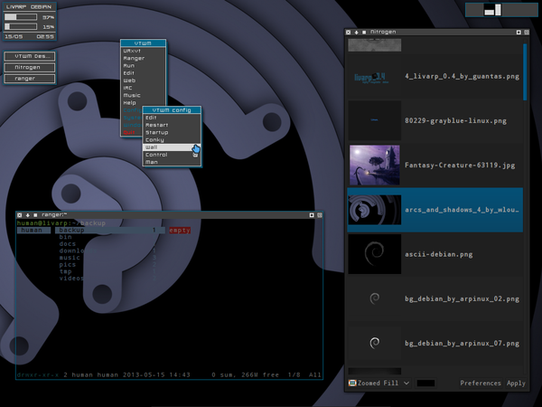

lang fr|gb

la session vtwm
vtwm aka Virtual Tabbed window Manager né en 1992 sur les sources de twm. c'est un gestionnaire de fenêtre ultra basic mais avec de nombreuses options. ancien, il se configure depuis un unique fichier ~/.vtwmrc. c'est un 'floating', c'est à dire qu'il laisse l'utilisateur placer les fenêtres. il est rapide, réactif et très léger. il convient parfaitement pour les petites configurations matérielles.
screenshot
{kind=link}
lancement
vtwm est lancé par le script ~/bin/start/vtwm_start.sh.
pour changer vos applications lancées au démarrage, éditer ce fichier:
composants
la session vtwm du livarp dispose de plusieurs éléments:
- IconManager: une boite à icones servant aussi de tasklist. configuré depuis ~/.vtwmrc.
- VirtualDesktop: un pager simple. configuré depuis ~/.vtwmrc.
- Menu vtwm: déclenché par un clic-gauche sur le bureau. configuré depuis ~/.vtwmrc.
- conky: ultra minimal, indiquant la consommation cpu & ram, la date & l'heure. configuré depuis ~/.conky/.conkyrc_vtwm.
- Menu livarp: disponible au coin supérieur gauche de l'écran, affiche le menu et le systray, configuré depuis ~/.config/fbpanel/default.
configuration
pour conky, il faut éditer son conkyrc:
pour fbpanel, il comprend le menu et le systray, si vous désirez ajouter des plugins, visitez la page dédiée.
la configuration de vtwm passe par l'édition du fichier ~/.vtwmrc
- depuis le menu vtwm: section config:éditer
- avec une commande:
vim .vtwmrc
le fichier est commenté et contrôle l'intégralité des options de vtwm.
une fois vos modifications apportées, relancer vtwm avec le raccourcis clavier Ctrl+Alt+r.
raccourcis clavier/souris
configurables depuis le fichier ~/.vtwmrc, voici la liste des raccourcis clavier de vtwm sur livarp:
menus:
- menu vtwm: clic gauche sur le bureau
- menu livarp: au coin supérieur gauche
control:
- relancer vtwm: Ctrl+Alt+r
- quitter vtwm:Ctrl+Shift+q
- quitter livarp: Ctrl+Shift+Alt+q
fenêtres:
- fermer le client: Super+q
- tuer le client: Super+x ou clic-central sur l'icone
- iconifier le client: Super+i
- maximiser le client: Super+m
- client précédent: Alt+Shit+Tab
- client suivant: Alt+Tab
- menu client: clic droit (titre)*
- déplacer / passer à l'arière-plan: Alt+clic-droit (fenêtre ou icone)*
- déplacer: clic-gauche (titre)*
- (des)iconifier: Alt+clic-central (fenêtre ou icone)*
- redimensionne / passe au premier-plan: Alt+clic-gauche (fenêtre ou icone)* ou clic-gauche (titre)*
- passe au premier/arrière-plan: clic-central (titre)*
navigation:
- bureau de droite: Ctrl+Droite ou molette haut
- bureau de gauche:Ctrl+Gauche ou molette bas
lanceurs:
- lanceur de terminal par défaut: Ctrl+Enter
- lanceur de terminal: Super+t
- lancer dmenu: Super+d
- lancer ranger: Super+r
- lancer rox-filer: Super+Shift+r
- lancer firefox: Super+w
- control du volume: Super+v
les boutons des fenêtres: de gauche à droite:
fermer -- iconifier -- fixer -- plein-écran -- redimensionner